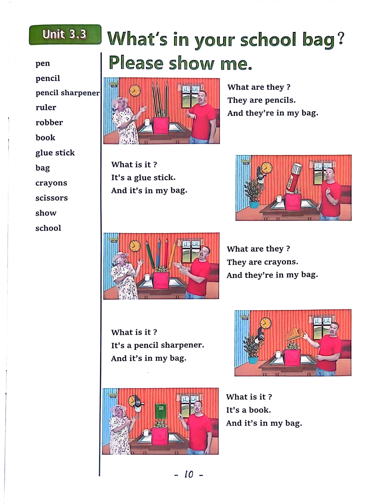

Day 10
Unit 4 · story
教材重点
教材重点依据网盘文件“第四级绿色每日打卡全.pdf”，PDF 第 12 页对应 Day 10；以原图为准，避免对图片文字做不可靠的自动识别。
网盘教材重点原图 · PDF 第 12 页对应 Day 10

Unit 4 · story · 6–7岁
house · tree · look · play
Hello, hello, my name's Steve.
台词本为机器转写，可能存在识别误差；不等同于视频逐字原声。
详细内容
Part 1 核心词汇
必须掌握 · 4 个Part 2 跟读句型与句型拓展
左侧保留台词本原句，右侧为替换练习；拓展内容不是视频逐字台词。
Hello, hello, my name's Steve.
It's time to play. It's time to play in English.
Go channel.
Tree house and zip line.
Hello, boys and girls, I I'm going to meet Maggie at the park to play football. Yeah?
Part 3 台词本全文
来源：第4级台词本 · 010.Wow!Green - Unit 4 story2.pdf。以下保留网盘 PDF 的机器转写文本，仅清理了文件路径页眉和空行。
Hello, hello, my name's Steve.
It's time to play. It's time to play in English.
Go channel.
Bridge.
Tree house and zip line.
I
Hey,
Hello, boys and girls, I I'm going to meet Maggie at the park to play football. Yeah?
Oh, this is my stop, hey, this is Stop.
Thank you, driver, am I great?
Play football? Okay? Where's the park, and where's Maggie?
Oh, there's Maggie. Hi. Maggie. Hi. Oh, no, what a busy road with lots of cars.
Oh, I need to get over to the park. Hey Maggie, how can I get over to you.
I can help with a little monkey.
Oh no, not Maggie, magic, what's she going to do Maggie.
Hello,
Hello, oh, hello, where am I What is this place.
Oh, I'm in a tunnel. Oh, great idea, maggie.
I'm in a tunnel.
Under the road here, oh, so, hey, what is it? Yeah,
It's a tunnel, say it with me, come on, what is it.
It's a tunnel. What is it.
It's a tunnel. What is it It's a tunnel.
So great now it's time to Hey, play football. Oh no, oh,
That was lucky, I nearly felt in.
Oh dear,
Get to Maggie. Maggie.
Can you help me again, please? OK, I can make a bridge and reckon.
Wow, look, a bridge.
Dear Maggie, he came on.
/
-
/4/010.Wow!Green - Unit 4 story2.txt[2022/3/29
星期二
6:49:28]
Walking over the a river.
Look what is it say it with me, come on, it's, ah,
Bridge, what is it It's a bridge. What is it It's a.
Bridge, that's right, so now it really is time to play football coming, maggie.
Go go.
Oh thanks, maggie, thanks for your help. I'm finally here.
By the goal, hey, you know what a goal is, don't you? Look, this is a goal, say it with me, come on, what
i
s it.
It's a goal. What is it.
It's a goal. What is it.
It's a go, that's right, oh, I like football. Do you.
I, oh, what was that?
Oh no, it's raining, oh, maggie, I need your help again.
Great idea, yeah, look, a tree house, hey, let's hide in the tree house. Hurry up.
Up, let's climb up to the tree house.
This tree house is great.
Oh, hey.
Maggie, oh, look, it's a tree house, say it with me, come on, what is it.
It's a tree house. What is it.
It's a true house. What is it.
It's a tree house.
Oh, maggie, I'm happy to be here in your tree house And look.
It's not raining anymore, oh, but we can't play football, no, no, no, it's getting late.
I have to go home, pass the gold, the bridge and the tunnel, oh dear,
Time for Mom. Monkey magic.
Wow, what's that? Look, boys and girls.
Maggie has made a zip line.
Come on, steve, let's fly, okay, maggie, I'm coming, hey, let's go.
Hey,
Flying.
Say it with me, come on, what is it It's a zip line, what is it It's.